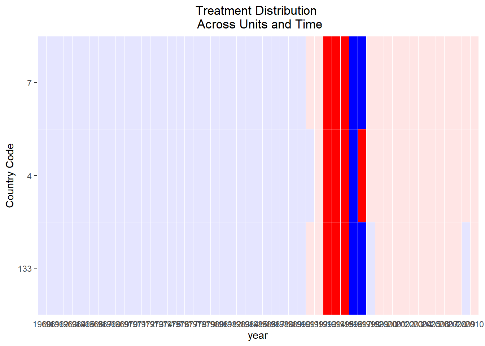
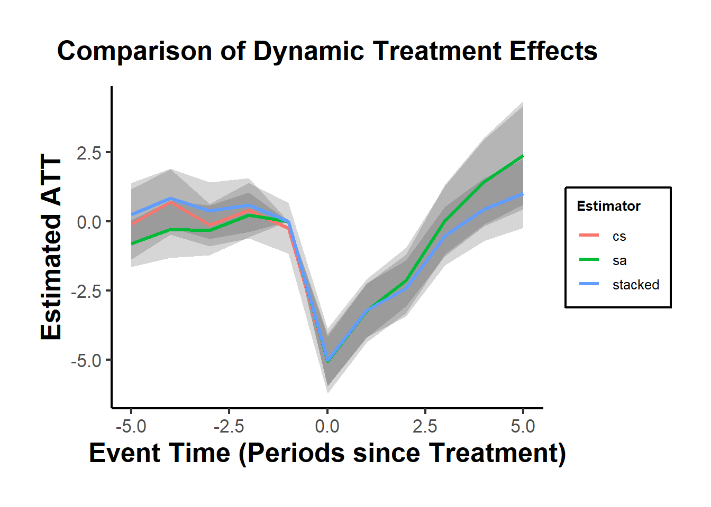

30.11 Remedies for Staggered DiD Biases
(Baker, Larcker, and Wang 2022)
- Cohort-Specific Comparisons
- Compare each treated cohort to appropriate controls:
- Not-yet-treated units.
- Never-treated units.
- Alternative Estimators
- (Goodman-Bacon 2021): Decomposition methods for TWFE DiD.
- (Callaway and Sant’Anna 2021): ATT estimators, allowing for heterogeneity and flexible design.
- (L. Sun and Abraham 2021): Event-study estimation with “clean” controls (a special case of Callaway and Sant’Anna (2021))
- (Clément De Chaisemartin and d’Haultfoeuille 2020): Two-stage DiD approaches.
- (Borusyak, Jaravel, and Spiess 2021): Simple DiD estimators with automatic inference.
- Stacked DID (Simpler but Biased)
- Construct stacked datasets for each treatment cohort.
- Run separate regressions for each event.
- Examples:
30.11.1 Stacked Difference-in-Differences
The Stacked DiD approach addresses key limitations of standard TWFE models in staggered adoption designs, particularly treatment effect heterogeneity and timing variations. By constructing sub-experiments around each treatment event, researchers can isolate cleaner comparisons and reduce contamination from improperly specified control groups.
Basic TWFE Specification
\[ Y_{it} = \beta_{FE} D_{it} + A_i + B_t + \epsilon_{it} \]
- \(Y_{it}\): Outcome for unit \(i\) at time \(t\).
- \(D_{it}\): Treatment indicator (1 if treated, 0 otherwise).
- \(A_i\): Unit (group) fixed effects.
- \(B_t\): Time period fixed effects.
- \(\epsilon_{it}\): Idiosyncratic error term.
Steps in the Stacked DiD Procedure
30.11.1.1 Choose an Event Window
Define:
- \(\kappa_a\): Number of pre-treatment periods to include in the event window (lead periods).
- \(\kappa_b\): Number of post-treatment periods to include in the event window (lag periods).
Implication:
Only events where sufficient pre- and post-treatment periods exist will be included (i.e., excluding those events that do not meet this criteria).
30.11.1.2 Enumerate Sub-Experiments
Define:
- \(T_1\): First period in the panel.
- \(T_T\): Last period in the panel.
- \(\Omega_A\): The set of treatment adoption periods that fit within the event window:
\[ \Omega_A = \left\{ A_i \;\middle|\; T_1 + \kappa_a \le A_i \le T_T - \kappa_b \right\} \]
- Each \(A_i\) represents an adoption period for unit \(i\) that has enough time on both sides of the event.
Let \(d = 1, \dots, D\) index the sub-experiments in \(\Omega_A\).
- \(\omega_d\): The event (adoption) date of the \(d\)-th sub-experiment.
30.11.1.3 Define Inclusion Criteria
Valid Treated Units
- In sub-experiment \(d\), treated units have adoption date exactly equal to \(\omega_d\).
- A unit may only be treated in one sub-experiment to avoid duplication.
Clean Control Units
- Controls are units where \(A_i > \omega_d + \kappa_b\), i.e.,
- They are never treated, or
- They are treated in the far future (beyond the post-event window).
- A control unit can appear in multiple sub-experiments, but this requires correcting standard errors (see below).
Valid Time Periods
- Only observations where
\[ \omega_d - \kappa_a \le t \le \omega_d + \kappa_b \]
are included. - This ensures the analysis is centered on the event window.
30.11.1.4 Specify Estimating Equation
Basic DiD Specification in the Stacked Dataset
\[ Y_{itd} = \beta_0 + \beta_1 T_{id} + \beta_2 P_{td} + \beta_3 (T_{id} \times P_{td}) + \epsilon_{itd} \]
Where:
\(i\): Unit index
\(t\): Time index
\(d\): Sub-experiment index
\(T_{id}\): Indicator for treated units in sub-experiment \(d\)
\(P_{td}\): Indicator for post-treatment periods in sub-experiment \(d\)
\(\beta_3\): Captures the DiD estimate of the treatment effect.
Equivalent Form with Fixed Effects
\[ Y_{itd} = \beta_3 (T_{id} \times P_{td}) + \theta_{id} + \gamma_{td} + \epsilon_{itd} \]
where
\(\theta_{id}\): Unit-by-sub-experiment fixed effect.
\(\gamma_{td}\): Time-by-sub-experiment fixed effect.
Note:
- \(\beta_3\) summarizes the average treatment effect across all sub-experiments but does not allow for dynamic effects by time since treatment.
30.11.1.5 Stacked Event Study Specification
Define Time Since Event (\(YSE_{td}\)):
\[ YSE_{td} = t- \omega_d \]
where
Measures time since the event (relative time) in sub-experiment \(d\).
\(YSE_{td} \in [-\kappa_a, \dots, 0, \dots, \kappa_b]\) in every sub-experiment.
Event-Study Regression (Sub-Experiment Level)
\[ Y_{it}^d = \sum_{j = -\kappa_a}^{\kappa_b} \beta_j^d . 1 (YSE_{td} = j) + \sum_{j = -\kappa_a}^{\kappa_b} \delta_j^d (T_{id} . 1 (YSE_{td} = j)) + \theta_i^d + \epsilon_{it}^d \]
where
Separate coefficients for each sub-experiment \(d\).
\(\delta_j^d\): Captures treatment effects at relative time \(j\) within sub-experiment \(d\).
Pooled Stacked Event-Study Regression
\[ Y_{itd} = \sum_{j = -\kappa_a}^{\kappa_b} \beta_j \cdot \mathbb{1}(YSE_{td} = j) + \sum_{j = -\kappa_a}^{\kappa_b} \delta_j \left( T_{id} \cdot \mathbb{1}(YSE_{td} = j) \right) + \theta_{id} + \epsilon_{itd} \]
- Pooled coefficients \(\delta_j\) reflect average treatment effects by event time \(j\) across sub-experiments.
30.11.1.6 Clustering in Stacked DID
Cluster at Unit × Sub-Experiment Level (Cengiz et al. 2019): Accounts for units appearing multiple times across sub-experiments.
Cluster at Unit Level (Deshpande and Li 2019): Appropriate when units are uniquely identified and do not appear in multiple sub-experiments.
library(did)
library(tidyverse)
library(fixest)
# Load example data
data(base_stagg)
# Get treated cohorts (exclude never-treated units coded as 10000)
cohorts <- base_stagg %>%
filter(year_treated != 10000) %>%
distinct(year_treated) %>%
pull()
# Function to generate data for each sub-experiment
getdata <- function(j, window) {
base_stagg %>%
filter(
year_treated == j | # treated units in cohort j
year_treated > j + window # controls not treated soon after
) %>%
filter(
year >= j - window &
year <= j + window # event window bounds
) %>%
mutate(df = j) # sub-experiment indicator
}
# Generate the stacked dataset
stacked_data <- map_df(cohorts, ~ getdata(., window = 5)) %>%
mutate(
rel_year = if_else(df == year_treated, time_to_treatment, NA_real_)
) %>%
fastDummies::dummy_cols("rel_year", ignore_na = TRUE) %>%
mutate(across(starts_with("rel_year_"), ~ replace_na(., 0)))
# Estimate fixed effects regression on the stacked data
stacked_result <- feols(
y ~ `rel_year_-5` + `rel_year_-4` + `rel_year_-3` + `rel_year_-2` +
rel_year_0 + rel_year_1 + rel_year_2 + rel_year_3 +
rel_year_4 + rel_year_5 |
id ^ df + year ^ df,
data = stacked_data
)
# Extract coefficients and standard errors
stacked_coeffs <- stacked_result$coefficients
stacked_se <- stacked_result$se
# Insert zero for the omitted period (usually -1)
stacked_coeffs <- c(stacked_coeffs[1:4], 0, stacked_coeffs[5:10])
stacked_se <- c(stacked_se[1:4], 0, stacked_se[5:10])# Plotting estimates from three methods: Callaway & Sant'Anna, Sun & Abraham, and Stacked DiD
cs_out <- att_gt(
yname = "y",
data = base_stagg,
gname = "year_treated",
idname = "id",
# xformla = "~x1",
tname = "year"
)
cs <-
aggte(
cs_out,
type = "dynamic",
min_e = -5,
max_e = 5,
bstrap = FALSE,
cband = FALSE
)
res_sa20 = feols(y ~ sunab(year_treated, year) |
id + year, base_stagg)
sa = tidy(res_sa20)[5:14, ] %>% pull(estimate)
sa = c(sa[1:4], 0, sa[5:10])
sa_se = tidy(res_sa20)[6:15, ] %>% pull(std.error)
sa_se = c(sa_se[1:4], 0, sa_se[5:10])
compare_df_est = data.frame(
period = -5:5,
cs = cs$att.egt,
sa = sa,
stacked = stacked_coeffs
)
compare_df_se = data.frame(
period = -5:5,
cs = cs$se.egt,
sa = sa_se,
stacked = stacked_se
)
compare_df_longer <- compare_df_est %>%
pivot_longer(!period, names_to = "estimator", values_to = "est") %>%
full_join(compare_df_se %>%
pivot_longer(!period, names_to = "estimator", values_to = "se")) %>%
mutate(upper = est + 1.96 * se,
lower = est - 1.96 * se)
ggplot(compare_df_longer) +
geom_ribbon(aes(
x = period,
ymin = lower,
ymax = upper,
group = estimator
), alpha = 0.2) +
geom_line(aes(
x = period,
y = est,
group = estimator,
color = estimator
),
linewidth = 1.2) +
labs(
title = "Comparison of Dynamic Treatment Effects",
x = "Event Time (Periods since Treatment)",
y = "Estimated ATT",
color = "Estimator"
) +
causalverse::ama_theme()
30.11.2 Goodman-Bacon Decomposition
Paper: (Goodman-Bacon 2021)
For an excellent explanation slides by the author, see
Takeaways:
A pairwise DID (\(\tau\)) gets more weight if the change is close to the middle of the study window
A pairwise DID (\(\tau\)) gets more weight if it includes more observations.
Code from bacondecomp vignette
library(bacondecomp)
library(tidyverse)
data("castle")
castle <- bacondecomp::castle %>%
dplyr::select("l_homicide", "post", "state", "year")
head(castle)
#> l_homicide post state year
#> 1 2.027356 0 Alabama 2000
#> 2 2.164867 0 Alabama 2001
#> 3 1.936334 0 Alabama 2002
#> 4 1.919567 0 Alabama 2003
#> 5 1.749841 0 Alabama 2004
#> 6 2.130440 0 Alabama 2005
df_bacon <- bacon(
l_homicide ~ post,
data = castle,
id_var = "state",
time_var = "year"
)
#> type weight avg_est
#> 1 Earlier vs Later Treated 0.05976 -0.00554
#> 2 Later vs Earlier Treated 0.03190 0.07032
#> 3 Treated vs Untreated 0.90834 0.08796
# weighted average of the decomposition
sum(df_bacon$estimate * df_bacon$weight)
#> [1] 0.08181162Two-way Fixed effect estimate
library(broom)
fit_tw <- lm(l_homicide ~ post + factor(state) + factor(year),
data = bacondecomp::castle)
head(tidy(fit_tw))
#> # A tibble: 6 × 5
#> term estimate std.error statistic p.value
#> <chr> <dbl> <dbl> <dbl> <dbl>
#> 1 (Intercept) 1.95 0.0624 31.2 2.84e-118
#> 2 post 0.0818 0.0317 2.58 1.02e- 2
#> 3 factor(state)Alaska -0.373 0.0797 -4.68 3.77e- 6
#> 4 factor(state)Arizona 0.0158 0.0797 0.198 8.43e- 1
#> 5 factor(state)Arkansas -0.118 0.0810 -1.46 1.44e- 1
#> 6 factor(state)California -0.108 0.0810 -1.34 1.82e- 1Hence, naive TWFE fixed effect equals the weighted average of the Bacon decomposition (= 0.08).
library(ggplot2)
ggplot(df_bacon) +
aes(
x = weight,
y = estimate,
# shape = factor(type),
color = type
) +
labs(x = "Weight", y = "Estimate", shape = "Type") +
geom_point() +
causalverse::ama_theme()
With time-varying controls that can identify variation within-treatment timing group, the”early vs. late” and “late vs. early” estimates collapse to just one estimate (i.e., both treated).
30.11.3 DID with in and out treatment condition
30.11.3.1 Panel Match
As noted in (Imai and Kim 2021), the TWFE estimator is not a fully nonparametric approach and is sensitive to incorrect model specifications (i.e., model dependence).
- To mitigate model dependence, they propose matching methods for panel data.
- Implementations are available via the
wfe(Weighted Fixed Effects) andPanelMatchR packages.
Imai and Kim (2021)
This case generalizes the staggered adoption setting, allowing units to vary in treatment over time. For \(N\) units across \(T\) time periods (with potentially unbalanced panels), let \(X_{it}\) represent treatment and \(Y_{it}\) the outcome for unit \(i\) at time \(t\). We use the two-way linear fixed effects model:
\[ Y_{it} = \alpha_i + \gamma_t + \beta X_{it} + \epsilon_{it} \]
for \(i = 1, \dots, N\) and \(t = 1, \dots, T\). Here, \(\alpha_i\) and \(\gamma_t\) are unit and time fixed effects. They capture time-invariant unit-specific and unit-invariant time-specific unobserved confounders, respectively. We can express these as \(\alpha_i = h(\mathbf{U}_i)\) and \(\gamma_t = f(\mathbf{V}_t)\), with \(\mathbf{U}_i\) and \(\mathbf{V}_t\) being the confounders. The model doesn’t assume a specific form for \(h(.)\) and \(f(.)\), but that they’re additive and separable given binary treatment.
The least squares estimate of \(\beta\) leverages the covariance in outcome and treatment (Imai and Kim 2021, 406). Specifically, it uses the within-unit and within-time variations. Many researchers prefer the two fixed effects (2FE) estimator because it adjusts for both types of unobserved confounders without specific functional-form assumptions, but this is wrong (Imai and Kim 2019). We do need functional-form assumption (i.e., linearity assumption) for the 2FE to work (Imai and Kim 2021, 406)
Two-Way Matching Estimator:
It can lead to mismatches; units with the same treatment status get matched when estimating counterfactual outcomes.
Observations need to be matched with opposite treatment status for correct causal effects estimation.
Mismatches can cause attenuation bias.
The 2FE estimator adjusts for this bias using the factor \(K\), which represents the net proportion of proper matches between observations with opposite treatment status.
Weighting in 2FE:
Observation \((i,t)\) is weighted based on how often it acts as a control unit.
The weighted 2FE estimator still has mismatches, but fewer than the standard 2FE estimator.
Adjustments are made based on observations that neither belong to the same unit nor the same time period as the matched observation.
This means there are challenges in adjusting for unit-specific and time-specific unobserved confounders under the two-way fixed effect framework.
Equivalence & Assumptions:
Equivalence between the 2FE estimator and the DID estimator is dependent on the linearity assumption.
The multi-period DiD estimator is described as an average of two-time-period, two-group DiD estimators applied during changes from control to treatment.
Comparison with DiD:
In simple settings (two time periods, treatment given to one group in the second period), the standard nonparametric DiD estimator equals the 2FE estimator.
This doesn’t hold in multi-period DiD designs where units change treatment status multiple times at different intervals.
Contrary to popular belief, the unweighted 2FE estimator isn’t generally equivalent to the multi-period DiD estimator.
While the multi-period DiD can be equivalent to the weighted 2FE, some control observations may have negative regression weights.
Conclusion:
- Justifying the 2FE estimator as the DID estimator isn’t warranted without imposing the linearity assumption.
Application (Imai, Kim, and Wang 2021)
Matching Methods:
Enhance the validity of causal inference.
Reduce model dependence and provide intuitive diagnostics (Ho et al. 2007)
Rarely utilized in analyzing time series cross-sectional data.
The proposed matching estimators are more robust than the standard two-way fixed effects estimator, which can be biased if mis-specified
Better than synthetic controls (e.g., (Xu 2017)) because it needs less data to achieve good performance and and adapt the the context of unit switching treatment status multiple times.
Notes:
- Potential carryover effects (treatment may have a long-term effect), leading to post-treatment bias.
Proposed Approach:
Treated observations are matched with control observations from other units in the same time period with the same treatment history up to a specified number of lags.
Standard matching and weighting techniques are employed to further refine the matched set.
Apply a DiD estimator to adjust for time trend.
The goal is to have treated and matched control observations with similar covariate values.
Assessment:
- The quality of matches is evaluated through covariate balancing.
Estimation:
- Both short-term and long-term average treatment effects on the treated (ATT) are estimated.
Treatment Variation plot
Visualize the variation of the treatment across space and time
Aids in discerning whether the treatment fluctuates adequately over time and units or if the variation is primarily clustered in a subset of data.
DisplayTreatment(
unit.id = "wbcode2",
time.id = "year",
legend.position = "none",
xlab = "year",
ylab = "Country Code",
treatment = "dem",
hide.x.tick.label = TRUE, hide.y.tick.label = TRUE,
# dense.plot = TRUE,
data = dem
)
- Select \(F\) (i.e., the number of leads - time periods after treatment). Driven by what authors are interested in estimating:
\(F = 0\) is the contemporaneous effect (short-term effect)
\(F = n\) is the the treatment effect on the outcome two time periods after the treatment. (cumulative or long-term effect)
- Select \(L\) (number of lags to adjust).
Driven by the identification assumption.
Balances bias-variance tradeoff.
Higher \(L\) values increase credibility but reduce efficiency by limiting potential matches.
Model assumption:
No spillover effect assumed.
Carryover effect allowed up to \(L\) periods.
Potential outcome for a unit depends neither on others’ treatment status nor on its past treatment after \(L\) periods.
After defining causal quantity with parameters \(L\) and \(F\).
- Focus on the average treatment effect of treatment status change.
- \(\delta(F,L)\) is the average causal effect of treatment change (ATT), \(F\) periods post-treatment, considering treatment history up to \(L\) periods.
- Causal quantity considers potential future treatment reversals, meaning treatment could revert to control before outcome measurement.
Also possible to estimate the average treatment effect of treatment reversal on the reversed (ART).
Choose \(L,F\) based on specific needs.
A large \(L\) value:
Increases the credibility of the limited carryover effect assumption.
Allows more past treatments (up to \(t−L\)) to influence the outcome \(Y_{i,t+F}\).
Might reduce the number of matches and lead to less precise estimates.
Selecting an appropriate number of lags
Researchers should base this choice on substantive knowledge.
Sensitivity of empirical results to this choice should be examined.
The choice of \(F\) should be:
Substantively motivated.
Decides whether the interest lies in short-term or long-term causal effects.
A large \(F\) value can complicate causal effect interpretation, especially if many units switch treatment status during the \(F\) lead time period.
Identification Assumption
Parallel trend assumption conditioned on treatment, outcome (excluding immediate lag), and covariate histories.
Doesn’t require strong unconfoundedness assumption.
Cannot account for unobserved time-varying confounders.
Essential to examine outcome time trends.
- Check if they’re parallel between treated and matched control units using pre-treatment data
Constructing the Matched Sets:
For each treated observation, create matched control units with identical treatment history from \(t−L\) to \(t−1\).
Matching based on treatment history helps control for carryover effects.
Past treatments often act as major confounders, but this method can correct for it.
Exact matching on time period adjusts for time-specific unobserved confounders.
Unlike staggered adoption methods, units can change treatment status multiple times.
Matched set allows treatment switching in and out of treatment
Refining the Matched Sets:
Initially, matched sets adjust only for treatment history.
Parallel trend assumption requires adjustments for other confounders like past outcomes and covariates.
Matching methods:
Match each treated observation with up to \(J\) control units.
Distance measures like Mahalanobis distance or propensity score can be used.
Match based on estimated propensity score, considering pretreatment covariates.
Refined matched set selects most similar control units based on observed confounders.
Weighting methods:
Assign weight to each control unit in a matched set.
Weights prioritize more similar units.
Inverse propensity score weighting method can be applied.
Weighting is a more generalized method than matching.
The Difference-in-Differences Estimator:
Using refined matched sets, the ATT (Average Treatment Effect on the Treated) of policy change is estimated.
For each treated observation, estimate the counterfactual outcome using the weighted average of control units in the refined set.
The DiD estimate of the ATT is computed for each treated observation, then averaged across all such observations.
For noncontemporaneous treatment effects where \(F > 0\):
The ATT doesn’t specify future treatment sequence.
Matched control units might have units receiving treatment between time \(t\) and \(t + F\).
Some treated units could return to control conditions between these times.
Checking Covariate Balance:
The proposed methodology offers the advantage of checking covariate balance between treated and matched control observations.
This check helps to see if treated and matched control observations are comparable with respect to observed confounders.
Once matched sets are refined, covariate balance examination becomes straightforward.
Examine the mean difference of each covariate between a treated observation and its matched controls for each pretreatment time period.
Standardize this difference using the standard deviation of each covariate across all treated observations in the dataset.
Aggregate this covariate balance measure across all treated observations for each covariate and pretreatment time period.
Examine balance for lagged outcome variables over multiple pretreatment periods and time-varying covariates.
- This helps evaluate the validity of the parallel trend assumption underlying the proposed DiD estimator.
Relations with Linear Fixed Effects Regression Estimators:
The standard DiD estimator is equivalent to the linear two-way fixed effects regression estimator when:
Only two time periods exist.
Treatment is given to some units exclusively in the second period.
This equivalence doesn’t extend to multiperiod DiD designs, where:
More than two time periods are considered.
Units might receive treatment multiple times.
Despite this, many researchers relate the use of the two-way fixed effects estimator to the DiD design.
Standard Error Calculation:
Approach:
Condition on the weights implied by the matching process.
These weights denote how often an observation is utilized in matching (G. W. Imbens and Rubin 2015)
Context:
Analogous to the conditional variance seen in regression models.
Resulting standard errors don’t factor in uncertainties around the matching procedure.
They can be viewed as a measure of uncertainty conditional upon the matching process (Ho et al. 2007).
Key Findings:
Even in conditions favoring OLS, the proposed matching estimator displayed higher robustness to omitted relevant lags than the linear regression model with fixed effects.
The robustness offered by matching came at a cost - reduced statistical power.
This emphasizes the classic statistical tradeoff between bias (where matching has an advantage) and variance (where regression models might be more efficient).
Data Requirements
The treatment variable is binary:
0 signifies “assignment” to control.
1 signifies assignment to treatment.
Variables identifying units in the data must be: Numeric or integer.
Variables identifying time periods should be: Consecutive numeric/integer data.
Data format requirement: Must be provided as a standard
data.frameobject.
Basic functions:
Utilize treatment histories to create matching sets of treated and control units.
Refine these matched sets by determining weights for each control unit in the set.
- Units with higher weights have a larger influence during estimations.
Matching on Treatment History:
Goal is to match units transitioning from untreated to treated status with control units that have similar past treatment histories.
Setting the Quantity of Interest (
qoi =)attaverage treatment effect on treated unitsatcaverage treatment effect of treatment on the control unitsartaverage effect of treatment reversal for units that experience treatment reversalateaverage treatment effect
library(PanelMatch)
# All examples follow the package's vignette
# Create the matched sets
PM.results.none <-
PanelMatch(
lag = 4,
time.id = "year",
unit.id = "wbcode2",
treatment = "dem",
refinement.method = "none",
data = dem,
match.missing = TRUE,
size.match = 5,
qoi = "att",
outcome.var = "y",
lead = 0:4,
forbid.treatment.reversal = FALSE,
use.diagonal.variance.matrix = TRUE
)
# visualize the treated unit and matched controls
DisplayTreatment(
unit.id = "wbcode2",
time.id = "year",
legend.position = "none",
xlab = "year",
ylab = "Country Code",
treatment = "dem",
data = dem,
matched.set = PM.results.none$att[1],
# highlight the particular set
show.set.only = TRUE
)
Control units and the treated unit have identical treatment histories over the lag window (1988-1991)
DisplayTreatment(
unit.id = "wbcode2",
time.id = "year",
legend.position = "none",
xlab = "year",
ylab = "Country Code",
treatment = "dem",
data = dem,
matched.set = PM.results.none$att[2],
# highlight the particular set
show.set.only = TRUE
)
This set is more limited than the first one, but we can still see that we have exact past histories.
Refining Matched Sets
Refinement involves assigning weights to control units.
Users must:
Specify a method for calculating unit similarity/distance.
Choose variables for similarity/distance calculations.
Select a Refinement Method
Users determine the refinement method via the
refinement.methodargument.Options include:
mahalanobisps.matchCBPS.matchps.weightCBPS.weightps.msm.weightCBPS.msm.weightnone
Methods with “match” in the name and Mahalanobis will assign equal weights to similar control units.
“Weighting” methods give higher weights to control units more similar to treated units.
Variable Selection
Users need to define which covariates will be used through the
covs.formulaargument, a one-sided formula object.Variables on the right side of the formula are used for calculations.
“Lagged” versions of variables can be included using the format:
I(lag(name.of.var, 0:n)).
Understanding
PanelMatchandmatched.setobjectsThe
PanelMatchfunction returns aPanelMatchobject.The most crucial element within the
PanelMatchobject is the matched.set object.Within the
PanelMatchobject, the matched.set object will have names like att, art, or atc.If
qoi = ate, there will be two matched.set objects: att and atc.
Matched.set Object Details
matched.set is a named list with added attributes.
Attributes include:
Lag
Names of treatment
Unit and time variables
Each list entry represents a matched set of treated and control units.
Naming follows a structure:
[id variable].[time variable].Each list element is a vector of control unit ids that match the treated unit mentioned in the element name.
Since it’s a matching method, weights are only given to the
size.matchmost similar control units based on distance calculations.
# PanelMatch without any refinement
PM.results.none <-
PanelMatch(
lag = 4,
time.id = "year",
unit.id = "wbcode2",
treatment = "dem",
refinement.method = "none",
data = dem,
match.missing = TRUE,
size.match = 5,
qoi = "att",
outcome.var = "y",
lead = 0:4,
forbid.treatment.reversal = FALSE,
use.diagonal.variance.matrix = TRUE
)
# Extract the matched.set object
msets.none <- PM.results.none$att
# PanelMatch with refinement
PM.results.maha <-
PanelMatch(
lag = 4,
time.id = "year",
unit.id = "wbcode2",
treatment = "dem",
refinement.method = "mahalanobis", # use Mahalanobis distance
data = dem,
match.missing = TRUE,
covs.formula = ~ tradewb,
size.match = 5,
qoi = "att" ,
outcome.var = "y",
lead = 0:4,
forbid.treatment.reversal = FALSE,
use.diagonal.variance.matrix = TRUE
)
msets.maha <- PM.results.maha$att# these 2 should be identical because weights are not shown
msets.none |> head()
#> wbcode2 year matched.set.size
#> 1 4 1992 74
#> 2 4 1997 2
#> 3 6 1973 63
#> 4 6 1983 73
#> 5 7 1991 81
#> 6 7 1998 1
msets.maha |> head()
#> wbcode2 year matched.set.size
#> 1 4 1992 74
#> 2 4 1997 2
#> 3 6 1973 63
#> 4 6 1983 73
#> 5 7 1991 81
#> 6 7 1998 1
# summary(msets.none)
# summary(msets.maha)Visualizing Matched Sets with the plot method
Users can visualize the distribution of the matched set sizes.
A red line, by default, indicates the count of matched sets where treated units had no matching control units (i.e., empty matched sets).
Plot adjustments can be made using
graphics::plot.

Comparing Methods of Refinement
Users are encouraged to:
Use substantive knowledge for experimentation and evaluation.
Consider the following when configuring
PanelMatch:The number of matched sets.
The number of controls matched to each treated unit.
Achieving covariate balance.
Note: Large numbers of small matched sets can lead to larger standard errors during the estimation stage.
Covariates that aren’t well balanced can lead to undesirable comparisons between treated and control units.
Aspects to consider include:
Refinement method.
Variables for weight calculation.
Size of the lag window.
Procedures for addressing missing data (refer to
match.missingandlistwise.deletearguments).Maximum size of matched sets (for matching methods).
Supportive Features:
print,plot, andsummarymethods assist in understanding matched sets and their sizes.get_covariate_balancehelps evaluate covariate balance:- Lower values in the covariate balance calculations are preferred.
PM.results.none <-
PanelMatch(
lag = 4,
time.id = "year",
unit.id = "wbcode2",
treatment = "dem",
refinement.method = "none",
data = dem,
match.missing = TRUE,
size.match = 5,
qoi = "att",
outcome.var = "y",
lead = 0:4,
forbid.treatment.reversal = FALSE,
use.diagonal.variance.matrix = TRUE
)
PM.results.maha <-
PanelMatch(
lag = 4,
time.id = "year",
unit.id = "wbcode2",
treatment = "dem",
refinement.method = "mahalanobis",
data = dem,
match.missing = TRUE,
covs.formula = ~ I(lag(tradewb, 1:4)) + I(lag(y, 1:4)),
size.match = 5,
qoi = "att",
outcome.var = "y",
lead = 0:4,
forbid.treatment.reversal = FALSE,
use.diagonal.variance.matrix = TRUE
)
# listwise deletion used for missing data
PM.results.listwise <-
PanelMatch(
lag = 4,
time.id = "year",
unit.id = "wbcode2",
treatment = "dem",
refinement.method = "mahalanobis",
data = dem,
match.missing = FALSE,
listwise.delete = TRUE,
covs.formula = ~ I(lag(tradewb, 1:4)) + I(lag(y, 1:4)),
size.match = 5,
qoi = "att",
outcome.var = "y",
lead = 0:4,
forbid.treatment.reversal = FALSE,
use.diagonal.variance.matrix = TRUE
)
# propensity score based weighting method
PM.results.ps.weight <-
PanelMatch(
lag = 4,
time.id = "year",
unit.id = "wbcode2",
treatment = "dem",
refinement.method = "ps.weight",
data = dem,
match.missing = FALSE,
listwise.delete = TRUE,
covs.formula = ~ I(lag(tradewb, 1:4)) + I(lag(y, 1:4)),
size.match = 5,
qoi = "att",
outcome.var = "y",
lead = 0:4,
forbid.treatment.reversal = FALSE
)
get_covariate_balance(
PM.results.none$att,
data = dem,
covariates = c("tradewb", "y"),
plot = FALSE
)
#> tradewb y
#> t_4 -0.07245466 0.291871990
#> t_3 -0.20930129 0.208654876
#> t_2 -0.24425207 0.107736647
#> t_1 -0.10806125 -0.004950238
#> t_0 -0.09493854 -0.015198483
get_covariate_balance(
PM.results.maha$att,
data = dem,
covariates = c("tradewb", "y"),
plot = FALSE
)
#> tradewb y
#> t_4 0.04558637 0.09701606
#> t_3 -0.03312750 0.10844046
#> t_2 -0.01396793 0.08890753
#> t_1 0.10474894 0.06618865
#> t_0 0.15885415 0.05691437
get_covariate_balance(
PM.results.listwise$att,
data = dem,
covariates = c("tradewb", "y"),
plot = FALSE
)
#> tradewb y
#> t_4 0.05634922 0.05223623
#> t_3 -0.01104797 0.05217896
#> t_2 0.01411473 0.03094133
#> t_1 0.06850180 0.02092209
#> t_0 0.05044958 0.01943728
get_covariate_balance(
PM.results.ps.weight$att,
data = dem,
covariates = c("tradewb", "y"),
plot = FALSE
)
#> tradewb y
#> t_4 0.014362590 0.04035905
#> t_3 0.005529734 0.04188731
#> t_2 0.009410044 0.04195008
#> t_1 0.027907540 0.03975173
#> t_0 0.040272235 0.04167921get_covariate_balance Function Options:
Allows for the generation of plots displaying covariate balance using
plot = TRUE.Plots can be customized using arguments typically used with the base R
plotmethod.Option to set
use.equal.weights = TRUEfor:Obtaining the balance of unrefined sets.
Facilitating understanding of the refinement’s impact.
# Use equal weights
get_covariate_balance(
PM.results.ps.weight$att,
data = dem,
use.equal.weights = TRUE,
covariates = c("tradewb", "y"),
plot = TRUE,
# visualize by setting plot to TRUE
ylim = c(-1, 1)
)
# Compare covariate balance to refined sets
# See large improvement in balance
get_covariate_balance(
PM.results.ps.weight$att,
data = dem,
covariates = c("tradewb", "y"),
plot = TRUE,
# visualize by setting plot to TRUE
ylim = c(-1, 1)
)
balance_scatter(
matched_set_list = list(PM.results.maha$att,
PM.results.ps.weight$att),
data = dem,
covariates = c("y", "tradewb")
)
PanelEstimate
Standard Error Calculation Methods
There are different methods available:
Bootstrap (default method with 1000 iterations).
Conditional: Assumes independence across units, but not time.
Unconditional: Doesn’t make assumptions of independence across units or time.
For
qoivalues set toatt,art, oratc(Imai, Kim, and Wang 2021):- You can use analytical methods for calculating standard errors, which include both “conditional” and “unconditional” methods.
PE.results <- PanelEstimate(
sets = PM.results.ps.weight,
data = dem,
se.method = "bootstrap",
number.iterations = 1000,
confidence.level = .95
)
# point estimates
PE.results[["estimates"]]
#> t+0 t+1 t+2 t+3 t+4
#> 0.2609565 0.9630847 1.2851017 1.7370930 1.4871846
# standard errors
PE.results[["standard.error"]]
#> t+0 t+1 t+2 t+3 t+4
#> 0.6387986 1.0548882 1.4282656 1.7870905 2.2085197
# use conditional method
PE.results <- PanelEstimate(
sets = PM.results.ps.weight,
data = dem,
se.method = "conditional",
confidence.level = .95
)
# point estimates
PE.results[["estimates"]]
#> t+0 t+1 t+2 t+3 t+4
#> 0.2609565 0.9630847 1.2851017 1.7370930 1.4871846
# standard errors
PE.results[["standard.error"]]
#> t+0 t+1 t+2 t+3 t+4
#> 0.4844805 0.8170604 1.1171942 1.4116879 1.7172143
summary(PE.results)
#> Weighted Difference-in-Differences with Propensity Score
#> Matches created with 4 lags
#>
#> Standard errors computed with conditional method
#>
#> Estimate of Average Treatment Effect on the Treated (ATT) by Period:
#> $summary
#> estimate std.error 2.5% 97.5%
#> t+0 0.2609565 0.4844805 -0.6886078 1.210521
#> t+1 0.9630847 0.8170604 -0.6383243 2.564494
#> t+2 1.2851017 1.1171942 -0.9045586 3.474762
#> t+3 1.7370930 1.4116879 -1.0297644 4.503950
#> t+4 1.4871846 1.7172143 -1.8784937 4.852863
#>
#> $lag
#> [1] 4
#>
#> $qoi
#> [1] "att"
plot(PE.results)
Moderating Variables
# moderating variable
dem$moderator <- 0
dem$moderator <- ifelse(dem$wbcode2 > 100, 1, 2)
PM.results <-
PanelMatch(
lag = 4,
time.id = "year",
unit.id = "wbcode2",
treatment = "dem",
refinement.method = "mahalanobis",
data = dem,
match.missing = TRUE,
covs.formula = ~ I(lag(tradewb, 1:4)) + I(lag(y, 1:4)),
size.match = 5,
qoi = "att",
outcome.var = "y",
lead = 0:4,
forbid.treatment.reversal = FALSE,
use.diagonal.variance.matrix = TRUE
)
PE.results <-
PanelEstimate(sets = PM.results,
data = dem,
moderator = "moderator")
# Each element in the list corresponds to a level in the moderator
plot(PE.results[[1]])

To write up for journal submission, you can follow the following report:
In this study, closely aligned with the research by (Acemoglu et al. 2019), two key effects of democracy on economic growth are estimated: the impact of democratization and that of authoritarian reversal. The treatment variable, \(X_{it}\), is defined to be one if country \(i\) is democratic in year \(t\), and zero otherwise.
The Average Treatment Effect for the Treated (ATT) under democratization is formulated as follows:
\[ \begin{aligned} \delta(F, L) &= \mathbb{E} \left\{ Y_{i, t + F} (X_{it} = 1, X_{i, t - 1} = 0, \{X_{i,t-l}\}_{l=2}^L) \right. \\ &\left. - Y_{i, t + F} (X_{it} = 0, X_{i, t - 1} = 0, \{X_{i,t-l}\}_{l=2}^L) | X_{it} = 1, X_{i, t - 1} = 0 \right\} \end{aligned} \]
In this framework, the treated observations are countries that transition from an authoritarian regime \(X_{it-1} = 0\) to a democratic one \(X_{it} = 1\). The variable \(F\) represents the number of leads, denoting the time periods following the treatment, and \(L\) signifies the number of lags, indicating the time periods preceding the treatment.
The ATT under authoritarian reversal is given by:
\[ \begin{aligned} &\mathbb{E} \left[ Y_{i, t + F} (X_{it} = 0, X_{i, t - 1} = 1, \{ X_{i, t - l}\}_{l=2}^L ) \right. \\ &\left. - Y_{i, t + F} (X_{it} = 1, X_{it-1} = 1, \{X_{i, t - l} \}_{l=2}^L ) | X_{it} = 0, X_{i, t - 1} = 1 \right] \end{aligned} \]
The ATT is calculated conditioning on 4 years of lags (\(L = 4\)) and up to 4 years following the policy change \(F = 1, 2, 3, 4\). Matched sets for each treated observation are constructed based on its treatment history, with the number of matched control units generally decreasing when considering a 4-year treatment history as compared to a 1-year history.
To enhance the quality of matched sets, methods such as Mahalanobis distance matching, propensity score matching, and propensity score weighting are utilized. These approaches enable us to evaluate the effectiveness of each refinement method. In the process of matching, we employ both up-to-five and up-to-ten matching to investigate how sensitive our empirical results are to the maximum number of allowed matches. For more information on the refinement process, please see the Web Appendix
The Mahalanobis distance is expressed through a specific formula. We aim to pair each treated unit with a maximum of \(J\) control units, permitting replacement, denoted as \(| \mathcal{M}_{it} \le J|\). The average Mahalanobis distance between a treated and each control unit over time is computed as:
\[ S_{it} (i') = \frac{1}{L} \sum_{l = 1}^L \sqrt{(\mathbf{V}_{i, t - l} - \mathbf{V}_{i', t -l})^T \mathbf{\Sigma}_{i, t - l}^{-1} (\mathbf{V}_{i, t - l} - \mathbf{V}_{i', t -l})} \]
For a matched control unit \(i' \in \mathcal{M}_{it}\), \(\mathbf{V}_{it'}\) represents the time-varying covariates to adjust for, and \(\mathbf{\Sigma}_{it'}\) is the sample covariance matrix for \(\mathbf{V}_{it'}\). Essentially, we calculate a standardized distance using time-varying covariates and average this across different time intervals.
In the context of propensity score matching, we employ a logistic regression model with balanced covariates to derive the propensity score. Defined as the conditional likelihood of treatment given pre-treatment covariates (Rosenbaum and Rubin 1983), the propensity score is estimated by first creating a data subset comprised of all treated and their matched control units from the same year. This logistic regression model is then fitted as follows:
\[ \begin{aligned} & e_{it} (\{\mathbf{U}_{i, t - l} \}^L_{l = 1}) \\ &= Pr(X_{it} = 1| \mathbf{U}_{i, t -1}, \ldots, \mathbf{U}_{i, t - L}) \\ &= \frac{1}{1 = \exp(- \sum_{l = 1}^L \beta_l^T \mathbf{U}_{i, t - l})} \end{aligned} \]
where \(\mathbf{U}_{it'} = (X_{it'}, \mathbf{V}_{it'}^T)^T\). Given this model, the estimated propensity score for all treated and matched control units is then computed. This enables the adjustment for lagged covariates via matching on the calculated propensity score, resulting in the following distance measure:
\[ S_{it} (i') = | \text{logit} \{ \hat{e}_{it} (\{ \mathbf{U}_{i, t - l}\}^L_{l = 1})\} - \text{logit} \{ \hat{e}_{i't}( \{ \mathbf{U}_{i', t - l} \}^L_{l = 1})\} | \]
Here, \(\hat{e}_{i't} (\{ \mathbf{U}_{i, t - l}\}^L_{l = 1})\) represents the estimated propensity score for each matched control unit \(i' \in \mathcal{M}_{it}\).
Once the distance measure \(S_{it} (i')\) has been determined for all control units in the original matched set, we fine-tune this set by selecting up to \(J\) closest control units, which meet a researcher-defined caliper constraint \(C\). All other control units receive zero weight. This results in a refined matched set for each treated unit \((i, t)\):
\[ \mathcal{M}_{it}^* = \{i' : i' \in \mathcal{M}_{it}, S_{it} (i') < C, S_{it} \le S_{it}^{(J)}\} \]
\(S_{it}^{(J)}\) is the \(J\)th smallest distance among the control units in the original set \(\mathcal{M}_{it}\).
For further refinement using weighting, a weight is assigned to each control unit \(i'\) in a matched set corresponding to a treated unit \((i, t)\), with greater weight accorded to more similar units. We utilize inverse propensity score weighting, based on the propensity score model mentioned earlier:
\[ w_{it}^{i'} \propto \frac{\hat{e}_{i't} (\{ \mathbf{U}_{i, t-l} \}^L_{l = 1} )}{1 - \hat{e}_{i't} (\{ \mathbf{U}_{i, t-l} \}^L_{l = 1} )} \]
In this model, \(\sum_{i' \in \mathcal{M}_{it}} w_{it}^{i'} = 1\) and \(w_{it}^{i'} = 0\) for \(i' \notin \mathcal{M}_{it}\). The model is fitted to the complete sample of treated and matched control units.
\[\begin{equation} \bar{B}(j, l) = \frac{1}{N_1} \sum_{i=1}^N \sum_{t = L+ 1}^{T-F}D_{it} B_{it}(j,l) \label{eq:aggbalance} \end{equation}\]Checking Covariate Balance A distinct advantage of the proposed methodology over regression methods is the ability it offers researchers to inspect the covariate balance between treated and matched control observations. This facilitates the evaluation of whether treated and matched control observations are comparable regarding observed confounders. To investigate the mean difference of each covariate (e.g., \(V_{it'j}\), representing the \(j\)-th variable in \(\mathbf{V}_{it'}\)) between the treated observation and its matched control observation at each pre-treatment time period (i.e., \(t' < t\)), we further standardize this difference. For any given pretreatment time period, we adjust by the standard deviation of each covariate across all treated observations in the dataset. Thus, the mean difference is quantified in terms of standard deviation units. Formally, for each treated observation \((i,t)\) where \(D_{it} = 1\), we define the covariate balance for variable \(j\) at the pretreatment time period \(t - l\) as: \[\begin{equation} B_{it}(j, l) = \frac{V_{i, t- l,j}- \sum_{i' \in \mathcal{M}_{it}}w_{it}^{i'}V_{i', t-l,j}}{\sqrt{\frac{1}{N_1 - 1} \sum_{i'=1}^N \sum_{t' = L+1}^{T-F}D_{i't'}(V_{i', t'-l, j} - \bar{V}_{t' - l, j})^2}} \label{eq:covbalance} \end{equation}\] where \(N_1 = \sum_{i'= 1}^N \sum_{t' = L+1}^{T-F} D_{i't'}\) denotes the total number of treated observations and \(\bar{V}_{t-l,j} = \sum_{i=1}^N D_{i,t-l,j}/N\). We then aggregate this covariate balance measure across all treated observations for each covariate and pre-treatment time period:
Lastly, we evaluate the balance of lagged outcome variables over several pre-treatment periods and that of time-varying covariates. This examination aids in assessing the validity of the parallel trend assumption integral to the DiD estimator justification.
In Figure for balance scatter, we demonstrate the enhancement of covariate balance thank to the refinement of matched sets. Each scatter plot contrasts the absolute standardized mean difference, as detailed in Equation (??), before (horizontal axis) and after (vertical axis) this refinement. Points below the 45-degree line indicate an improved standardized mean balance for certain time-varying covariates post-refinement. The majority of variables benefit from this refinement process. Notably, the propensity score weighting (bottom panel) shows the most significant improvement, whereas Mahalanobis matching (top panel) yields a more modest improvement.
library(PanelMatch)
library(causalverse)
runPanelMatch <- function(method, lag, size.match=NULL, qoi="att") {
# Default parameters for PanelMatch
common.args <- list(
lag = lag,
time.id = "year",
unit.id = "wbcode2",
treatment = "dem",
data = dem,
covs.formula = ~ I(lag(tradewb, 1:4)) + I(lag(y, 1:4)),
qoi = qoi,
outcome.var = "y",
lead = 0:4,
forbid.treatment.reversal = FALSE,
size.match = size.match # setting size.match here for all methods
)
if(method == "mahalanobis") {
common.args$refinement.method <- "mahalanobis"
common.args$match.missing <- TRUE
common.args$use.diagonal.variance.matrix <- TRUE
} else if(method == "ps.match") {
common.args$refinement.method <- "ps.match"
common.args$match.missing <- FALSE
common.args$listwise.delete <- TRUE
} else if(method == "ps.weight") {
common.args$refinement.method <- "ps.weight"
common.args$match.missing <- FALSE
common.args$listwise.delete <- TRUE
}
return(do.call(PanelMatch, common.args))
}
methods <- c("mahalanobis", "ps.match", "ps.weight")
lags <- c(1, 4)
sizes <- c(5, 10)You can either do it sequentailly
res_pm <- list()
for(method in methods) {
for(lag in lags) {
for(size in sizes) {
name <- paste0(method, ".", lag, "lag.", size, "m")
res_pm[[name]] <- runPanelMatch(method, lag, size)
}
}
}
# Now, you can access res_pm using res_pm[["mahalanobis.1lag.5m"]] etc.
# for treatment reversal
res_pm_rev <- list()
for(method in methods) {
for(lag in lags) {
for(size in sizes) {
name <- paste0(method, ".", lag, "lag.", size, "m")
res_pm_rev[[name]] <- runPanelMatch(method, lag, size, qoi = "art")
}
}
}or in parallel
library(foreach)
library(doParallel)
registerDoParallel(cores = 4)
# Initialize an empty list to store results
res_pm <- list()
# Replace nested for-loops with foreach
results <-
foreach(
method = methods,
.combine = 'c',
.multicombine = TRUE,
.packages = c("PanelMatch", "causalverse")
) %dopar% {
tmp <- list()
for (lag in lags) {
for (size in sizes) {
name <- paste0(method, ".", lag, "lag.", size, "m")
tmp[[name]] <- runPanelMatch(method, lag, size)
}
}
tmp
}
# Collate results
for (name in names(results)) {
res_pm[[name]] <- results[[name]]
}
# Treatment reversal
# Initialize an empty list to store results
res_pm_rev <- list()
# Replace nested for-loops with foreach
results_rev <-
foreach(
method = methods,
.combine = 'c',
.multicombine = TRUE,
.packages = c("PanelMatch", "causalverse")
) %dopar% {
tmp <- list()
for (lag in lags) {
for (size in sizes) {
name <- paste0(method, ".", lag, "lag.", size, "m")
tmp[[name]] <-
runPanelMatch(method, lag, size, qoi = "art")
}
}
tmp
}
# Collate results
for (name in names(results_rev)) {
res_pm_rev[[name]] <- results_rev[[name]]
}
stopImplicitCluster()library(gridExtra)
# Updated plotting function
create_balance_plot <- function(method, lag, sizes, res_pm, dem) {
matched_set_lists <- lapply(sizes, function(size) {
res_pm[[paste0(method, ".", lag, "lag.", size, "m")]]$att
})
return(
balance_scatter_custom(
matched_set_list = matched_set_lists,
legend.title = "Possible Matches",
set.names = as.character(sizes),
legend.position = c(0.2, 0.8),
# for compiled plot, you don't need x,y, or main labs
x.axis.label = "",
y.axis.label = "",
main = "",
data = dem,
dot.size = 5,
# show.legend = F,
them_use = causalverse::ama_theme(base_size = 32),
covariates = c("y", "tradewb")
)
)
}
plots <- list()
for (method in methods) {
for (lag in lags) {
plots[[paste0(method, ".", lag, "lag")]] <-
create_balance_plot(method, lag, sizes, res_pm, dem)
}
}
# # Arranging plots in a 3x2 grid
# grid.arrange(plots[["mahalanobis.1lag"]],
# plots[["mahalanobis.4lag"]],
# plots[["ps.match.1lag"]],
# plots[["ps.match.4lag"]],
# plots[["ps.weight.1lag"]],
# plots[["ps.weight.4lag"]],
# ncol=2, nrow=3)
# Standardized Mean Difference of Covariates
library(gridExtra)
library(grid)
# Create column and row labels using textGrob
col_labels <- c("1-year Lag", "4-year Lag")
row_labels <- c("Maha Matching", "PS Matching", "PS Weigthing")
major.axes.fontsize = 40
minor.axes.fontsize = 30
png(
file.path(getwd(), "images", "did_balance_scatter.png"),
width = 1200,
height = 1000
)
# Create a list-of-lists, where each inner list represents a row
grid_list <- list(
list(
nullGrob(),
textGrob(col_labels[1], gp = gpar(fontsize = minor.axes.fontsize)),
textGrob(col_labels[2], gp = gpar(fontsize = minor.axes.fontsize))
),
list(textGrob(
row_labels[1],
gp = gpar(fontsize = minor.axes.fontsize),
rot = 90
), plots[["mahalanobis.1lag"]], plots[["mahalanobis.4lag"]]),
list(textGrob(
row_labels[2],
gp = gpar(fontsize = minor.axes.fontsize),
rot = 90
), plots[["ps.match.1lag"]], plots[["ps.match.4lag"]]),
list(textGrob(
row_labels[3],
gp = gpar(fontsize = minor.axes.fontsize),
rot = 90
), plots[["ps.weight.1lag"]], plots[["ps.weight.4lag"]])
)
# "Flatten" the list-of-lists into a single list of grobs
grobs <- do.call(c, grid_list)
grid.arrange(
grobs = grobs,
ncol = 3,
nrow = 4,
widths = c(0.15, 0.42, 0.42),
heights = c(0.15, 0.28, 0.28, 0.28)
)
grid.text(
"Before Refinement",
x = 0.5,
y = 0.03,
gp = gpar(fontsize = major.axes.fontsize)
)
grid.text(
"After Refinement",
x = 0.03,
y = 0.5,
rot = 90,
gp = gpar(fontsize = major.axes.fontsize)
)
dev.off()
#> png
#> 2Note: Scatter plots display the standardized mean difference of each covariate \(j\) and lag year \(l\) as defined in Equation (??) before (x-axis) and after (y-axis) matched set refinement. Each plot includes varying numbers of possible matches for each matching method. Rows represent different matching/weighting methods, while columns indicate adjustments for various lag lengths.
# Step 1: Define configurations
configurations <- list(
list(refinement.method = "none", qoi = "att"),
list(refinement.method = "none", qoi = "art"),
list(refinement.method = "mahalanobis", qoi = "att"),
list(refinement.method = "mahalanobis", qoi = "art"),
list(refinement.method = "ps.match", qoi = "att"),
list(refinement.method = "ps.match", qoi = "art"),
list(refinement.method = "ps.weight", qoi = "att"),
list(refinement.method = "ps.weight", qoi = "art")
)
# Step 2: Use lapply or loop to generate results
results <- lapply(configurations, function(config) {
PanelMatch(
lag = 4,
time.id = "year",
unit.id = "wbcode2",
treatment = "dem",
data = dem,
match.missing = FALSE,
listwise.delete = TRUE,
size.match = 5,
outcome.var = "y",
lead = 0:4,
forbid.treatment.reversal = FALSE,
refinement.method = config$refinement.method,
covs.formula = ~ I(lag(tradewb, 1:4)) + I(lag(y, 1:4)),
qoi = config$qoi
)
})
# Step 3: Get covariate balance and plot
plots <- mapply(function(result, config) {
df <- get_covariate_balance(
if (config$qoi == "att")
result$att
else
result$art,
data = dem,
covariates = c("tradewb", "y"),
plot = F
)
causalverse::plot_covariate_balance_pretrend(df, main = "", show_legend = F)
}, results, configurations, SIMPLIFY = FALSE)
# Set names for plots
names(plots) <- sapply(configurations, function(config) {
paste(config$qoi, config$refinement.method, sep = ".")
})To export
library(gridExtra)
library(grid)
# Column and row labels
col_labels <-
c("None",
"Mahalanobis",
"Propensity Score Matching",
"Propensity Score Weighting")
row_labels <- c("ATT", "ART")
# Specify your desired fontsize for labels
minor.axes.fontsize <- 16
major.axes.fontsize <- 20
png(file.path(getwd(), "images", "p_covariate_balance.png"), width=1200, height=1000)
# Create a list-of-lists, where each inner list represents a row
grid_list <- list(
list(
nullGrob(),
textGrob(col_labels[1], gp = gpar(fontsize = minor.axes.fontsize)),
textGrob(col_labels[2], gp = gpar(fontsize = minor.axes.fontsize)),
textGrob(col_labels[3], gp = gpar(fontsize = minor.axes.fontsize)),
textGrob(col_labels[4], gp = gpar(fontsize = minor.axes.fontsize))
),
list(
textGrob(
row_labels[1],
gp = gpar(fontsize = minor.axes.fontsize),
rot = 90
),
plots$att.none,
plots$att.mahalanobis,
plots$att.ps.match,
plots$att.ps.weight
),
list(
textGrob(
row_labels[2],
gp = gpar(fontsize = minor.axes.fontsize),
rot = 90
),
plots$art.none,
plots$art.mahalanobis,
plots$art.ps.match,
plots$art.ps.weight
)
)
# "Flatten" the list-of-lists into a single list of grobs
grobs <- do.call(c, grid_list)
# Arrange your plots with text labels
grid.arrange(
grobs = grobs,
ncol = 5,
nrow = 3,
widths = c(0.1, 0.225, 0.225, 0.225, 0.225),
heights = c(0.1, 0.45, 0.45)
)
# Add main x and y axis titles
grid.text(
"Refinement Methods",
x = 0.5,
y = 0.01,
gp = gpar(fontsize = major.axes.fontsize)
)
grid.text(
"Quantities of Interest",
x = 0.02,
y = 0.5,
rot = 90,
gp = gpar(fontsize = major.axes.fontsize)
)
dev.off()Note: Each graph displays the standardized mean difference, as outlined in Equation (??), plotted on the vertical axis across a pre-treatment duration of four years represented on the horizontal axis. The leftmost column illustrates the balance prior to refinement, while the subsequent three columns depict the covariate balance post the application of distinct refinement techniques. Each individual line signifies the balance of a specific variable during the pre-treatment phase.The red line is tradewb and blue line is the lagged outcome variable.
In Figure ??, we observe a marked improvement in covariate balance due to the implemented matching procedures during the pre-treatment period. Our analysis prioritizes methods that adjust for time-varying covariates over a span of four years preceding the treatment initiation. The two rows delineate the standardized mean balance for both treatment modalities, with individual lines representing the balance for each covariate.
Across all scenarios, the refinement attributed to matched sets significantly enhances balance. Notably, using propensity score weighting considerably mitigates imbalances in confounders. While some degree of imbalance remains evident in the Mahalanobis distance and propensity score matching techniques, the standardized mean difference for the lagged outcome remains stable throughout the pre-treatment phase. This consistency lends credence to the validity of the proposed DiD estimator.
Estimation Results
We now detail the estimated ATTs derived from the matching techniques. Figure below offers visual representations of the impacts of treatment initiation (upper panel) and treatment reversal (lower panel) on the outcome variable for a duration of 5 years post-transition, specifically, (\(F = 0, 1, …, 4\)). Across the five methods (columns), it becomes evident that the point estimates of effects associated with treatment initiation consistently approximate zero over the 5-year window. In contrast, the estimated outcomes of treatment reversal are notably negative and maintain statistical significance through all refinement techniques during the initial year of transition and the 1 to 4 years that follow, provided treatment reversal is permissible. These effects are notably pronounced, pointing to an estimated reduction of roughly X% in the outcome variable.
Collectively, these findings indicate that the transition into the treated state from its absence doesn’t invariably lead to a heightened outcome. Instead, the transition from the treated state back to its absence exerts a considerable negative effect on the outcome variable in both the short and intermediate terms. Hence, the positive effect of the treatment (if we were to use traditional DiD) is actually driven by the negative effect of treatment reversal.
# sequential
# Step 1: Apply PanelEstimate function
# Initialize an empty list to store results
res_est <- vector("list", length(res_pm))
# Iterate over each element in res_pm
for (i in 1:length(res_pm)) {
res_est[[i]] <- PanelEstimate(
res_pm[[i]],
data = dem,
se.method = "bootstrap",
number.iterations = 1000,
confidence.level = .95
)
# Transfer the name of the current element to the res_est list
names(res_est)[i] <- names(res_pm)[i]
}
# Step 2: Apply plot_PanelEstimate function
# Initialize an empty list to store plot results
res_est_plot <- vector("list", length(res_est))
# Iterate over each element in res_est
for (i in 1:length(res_est)) {
res_est_plot[[i]] <-
plot_PanelEstimate(res_est[[i]],
main = "",
theme_use = causalverse::ama_theme(base_size = 14))
# Transfer the name of the current element to the res_est_plot list
names(res_est_plot)[i] <- names(res_est)[i]
}
# check results
# res_est_plot$mahalanobis.1lag.5m
# Step 1: Apply PanelEstimate function for res_pm_rev
# Initialize an empty list to store results
res_est_rev <- vector("list", length(res_pm_rev))
# Iterate over each element in res_pm_rev
for (i in 1:length(res_pm_rev)) {
res_est_rev[[i]] <- PanelEstimate(
res_pm_rev[[i]],
data = dem,
se.method = "bootstrap",
number.iterations = 1000,
confidence.level = .95
)
# Transfer the name of the current element to the res_est_rev list
names(res_est_rev)[i] <- names(res_pm_rev)[i]
}
# Step 2: Apply plot_PanelEstimate function for res_est_rev
# Initialize an empty list to store plot results
res_est_plot_rev <- vector("list", length(res_est_rev))
# Iterate over each element in res_est_rev
for (i in 1:length(res_est_rev)) {
res_est_plot_rev[[i]] <-
plot_PanelEstimate(res_est_rev[[i]],
main = "",
theme_use = causalverse::ama_theme(base_size = 14))
# Transfer the name of the current element to the res_est_plot_rev list
names(res_est_plot_rev)[i] <- names(res_est_rev)[i]
}# parallel
library(doParallel)
library(foreach)
# Detect the number of cores to use for parallel processing
num_cores <- 4
# Register the parallel backend
cl <- makeCluster(num_cores)
registerDoParallel(cl)
# Step 1: Apply PanelEstimate function in parallel
res_est <-
foreach(i = 1:length(res_pm), .packages = "PanelMatch") %dopar% {
PanelEstimate(
res_pm[[i]],
data = dem,
se.method = "bootstrap",
number.iterations = 1000,
confidence.level = .95
)
}
# Transfer names from res_pm to res_est
names(res_est) <- names(res_pm)
# Step 2: Apply plot_PanelEstimate function in parallel
res_est_plot <-
foreach(
i = 1:length(res_est),
.packages = c("PanelMatch", "causalverse", "ggplot2")
) %dopar% {
plot_PanelEstimate(res_est[[i]],
main = "",
theme_use = causalverse::ama_theme(base_size = 10))
}
# Transfer names from res_est to res_est_plot
names(res_est_plot) <- names(res_est)
# Step 1: Apply PanelEstimate function for res_pm_rev in parallel
res_est_rev <-
foreach(i = 1:length(res_pm_rev), .packages = "PanelMatch") %dopar% {
PanelEstimate(
res_pm_rev[[i]],
data = dem,
se.method = "bootstrap",
number.iterations = 1000,
confidence.level = .95
)
}
# Transfer names from res_pm_rev to res_est_rev
names(res_est_rev) <- names(res_pm_rev)
# Step 2: Apply plot_PanelEstimate function for res_est_rev in parallel
res_est_plot_rev <-
foreach(
i = 1:length(res_est_rev),
.packages = c("PanelMatch", "causalverse", "ggplot2")
) %dopar% {
plot_PanelEstimate(res_est_rev[[i]],
main = "",
theme_use = causalverse::ama_theme(base_size = 10))
}
# Transfer names from res_est_rev to res_est_plot_rev
names(res_est_plot_rev) <- names(res_est_rev)
# Stop the cluster
stopCluster(cl)To export
library(gridExtra)
library(grid)
# Column and row labels
col_labels <- c("Mahalanobis 5m",
"Mahalanobis 10m",
"PS Matching 5m",
"PS Matching 10m",
"PS Weighting 5m")
row_labels <- c("ATT", "ART")
# Specify your desired fontsize for labels
minor.axes.fontsize <- 16
major.axes.fontsize <- 20
png(file.path(getwd(), "images", "p_did_est_in_n_out.png"), width=1200, height=1000)
# Create a list-of-lists, where each inner list represents a row
grid_list <- list(
list(
nullGrob(),
textGrob(col_labels[1], gp = gpar(fontsize = minor.axes.fontsize)),
textGrob(col_labels[2], gp = gpar(fontsize = minor.axes.fontsize)),
textGrob(col_labels[3], gp = gpar(fontsize = minor.axes.fontsize)),
textGrob(col_labels[4], gp = gpar(fontsize = minor.axes.fontsize)),
textGrob(col_labels[5], gp = gpar(fontsize = minor.axes.fontsize))
),
list(
textGrob(row_labels[1], gp = gpar(fontsize = minor.axes.fontsize), rot = 90),
res_est_plot$mahalanobis.1lag.5m,
res_est_plot$mahalanobis.1lag.10m,
res_est_plot$ps.match.1lag.5m,
res_est_plot$ps.match.1lag.10m,
res_est_plot$ps.weight.1lag.5m
),
list(
textGrob(row_labels[2], gp = gpar(fontsize = minor.axes.fontsize), rot = 90),
res_est_plot_rev$mahalanobis.1lag.5m,
res_est_plot_rev$mahalanobis.1lag.10m,
res_est_plot_rev$ps.match.1lag.5m,
res_est_plot_rev$ps.match.1lag.10m,
res_est_plot_rev$ps.weight.1lag.5m
)
)
# "Flatten" the list-of-lists into a single list of grobs
grobs <- do.call(c, grid_list)
# Arrange your plots with text labels
grid.arrange(
grobs = grobs,
ncol = 6,
nrow = 3,
widths = c(0.1, 0.18, 0.18, 0.18, 0.18, 0.18),
heights = c(0.1, 0.45, 0.45)
)
# Add main x and y axis titles
grid.text(
"Methods",
x = 0.5,
y = 0.02,
gp = gpar(fontsize = major.axes.fontsize)
)
grid.text(
"",
x = 0.02,
y = 0.5,
rot = 90,
gp = gpar(fontsize = major.axes.fontsize)
)
dev.off()30.11.3.2 Counterfactual Estimators
- Also known as imputation approach (Liu, Wang, and Xu 2022)
- This class of estimator consider observation treatment as missing data. Models are built using data from the control units to impute conterfactuals for the treated observations.
- It’s called counterfactual estimators because they predict outcomes as if the treated observations had not received the treatment.
- Advantages:
- Avoids negative weights and biases by not using treated observations for modeling and applying uniform weights.
- Supports various models, including those that may relax strict exogeneity assumptions.
- Methods including
- Fixed-effects conterfactual estimator (FEct) (DiD is a special case):
- Based on the [Two-way Fixed-effects], where assumes linear additive functional form of unobservables based on unit and time FEs. But FEct fixes the improper weighting of TWFE by comparing within each matched pair (where each pair is the treated observation and its predicted counterfactual that is the weighted sum of all untreated observations).
- Interactive Fixed Effects conterfactual estimator (IFEct) Xu (2017):
- When we suspect unobserved time-varying confounder, FEct fails. Instead, IFEct uses the factor-augmented models to relax the strict exogeneity assumption where the effects of unobservables can be decomposed to unit FE + time FE + unit x time FE.
- Generalized Synthetic Controls are a subset of IFEct when treatments don’t revert.
- Matrix completion (MC) (Athey et al. 2021):
- Generalization of factor-augmented models. Different from IFEct which uses hard impute, MC uses soft impute to regularize the singular values when decomposing the residual matrix.
- Only when latent factors (of unobservables) are strong and sparse, IFEct outperforms MC.
- [Synthetic Controls] (case studies)
- Fixed-effects conterfactual estimator (FEct) (DiD is a special case):
Identifying Assumptions:
- Function Form: Additive separability of observables, unobservables, and idiosyncratic error term.
- Hence, these models are scale dependent (Athey and Imbens 2006) (e.g., log-transform outcome can invadiate this assumption).
- Strict Exogeneity: Conditional on observables and unobservables, potential outcomes are independent of treatment assignment (i.e., baseline quasi-randomization)
- In DiD, where unobservables = unit + time FEs, this assumption is the parallel trends assumption
- Low-dimensional Decomposition (Feasibility Assumption): Unobservable effects can be decomposed in low-dimension.
- For the case that \(U_{it} = f_t \times \lambda_i\) where \(f_t\) = common time trend (time FE), and \(\lambda_i\) = unit heterogeneity (unit FE). If \(U_{it} = f_t \times \lambda_i\) , DiD can satisfy this assumption. But this assumption is weaker than that of DID, and allows us to control for unobservables based on data.
Estimation Procedure:
- Using all control observations, estimate the functions of both observable and unobservable variables (relying on Assumptions 1 and 3).
- Predict the counterfactual outcomes for each treated unit using the obtained functions.
- Calculate the difference in treatment effect for each treated individual.
- By averaging over all treated individuals, you can obtain the Average Treatment Effect on the Treated (ATT).
Notes:
- Use jackknife when number of treated units is small (Liu, Wang, and Xu 2022, 166).
30.11.3.2.1 Imputation Method
Liu, Wang, and Xu (2022) can also account for treatment reversals and heterogeneous treatment effects.
Other imputation estimators include
library(fect)
PanelMatch::dem
model.fect <-
fect(
Y = "y",
D = "dem",
X = "tradewb",
data = na.omit(PanelMatch::dem),
method = "fe",
index = c("wbcode2", "year"),
se = TRUE,
parallel = TRUE,
seed = 1234,
# twfe
force = "two-way"
)
print(model.fect$est.avg)
plot(model.fect)
plot(model.fect, stats = "F.p")F-test \(H_0\): residual averages in the pre-treatment periods = 0
To see treatment reversal effects
30.11.3.2.2 Placebo Test
By selecting a part of the data and excluding observations within a specified range to improve the model fitting, we then evaluate whether the estimated Average Treatment Effect (ATT) within this range significantly differs from zero. This approach helps us analyze the periods before treatment.
If this test fails, either the functional form or strict exogeneity assumption is problematic.
30.11.3.2.3 (No) Carryover Effects Test
The placebo test can be adapted to assess carryover effects by masking several post-treatment periods instead of pre-treatment ones. If no carryover effects are present, the average prediction error should approximate zero. For the carryover test, set carryoverTest = TRUE. Specify a post-treatment period range in carryover.period to exclude observations for model fitting, then evaluate if the estimated ATT significantly deviates from zero.
Even if we have carryover effects, in most cases of the staggered adoption setting, researchers are interested in the cumulative effects, or aggregated treatment effects, so it’s okay.
out.fect.c <-
fect(
Y = "y",
D = "dem",
X = "tradewb",
data = na.omit(PanelMatch::dem),
method = "fe",
index = c("wbcode2", "year"),
se = TRUE,
carryoverTest = TRUE,
# how many periods of carryover
carryover.period = c(1, 3)
)
plot(out.fect.c, stats = "carryover.p")We have evidence of carryover effects.
30.11.3.3 Matrix Completion
Applications in marketing:
- Bronnenberg, Dubé, and Sanders (2020)
To estimate average causal effects in panel data with units exposed to treatment intermittently, two literatures are pivotal:
Unconfoundedness (G. W. Imbens and Rubin 2015): Imputes missing potential control outcomes for treated units using observed outcomes from similar control units in previous periods.
Synthetic Control (Abadie, Diamond, and Hainmueller 2010): Imputes missing control outcomes for treated units using weighted averages from control units, matching lagged outcomes between treated and control units.
Both exploit missing potential outcomes under different assumptions:
Unconfoundedness assumes time patterns are stable across units.
Synthetic control assumes unit patterns are stable over time.
Once regularization is applied, both approaches are applicable in similar settings (Athey et al. 2021).
Matrix Completion method, nesting both, is based on matrix factorization, focusing on imputing missing matrix elements assuming:
- Complete matrix = low-rank matrix + noise.
- Missingness is completely at random.
It’s distinguished by not imposing factorization restrictions but utilizing regularization to define the estimator, particularly effective with the nuclear norm as a regularizer for complex missing patterns (Athey et al. 2021).
Contributions of Athey et al. (2021) matrix completion include:
- Recognizing structured missing patterns allowing time correlation, enabling staggered adoption.
- Modifying estimators for unregularized unit and time fixed effects.
- Performing well across various \(T\) and \(N\) sizes, unlike unconfoundedness and synthetic control, which falter when \(T >> N\) or \(N >> T\), respectively.
Identifying Assumptions:
- SUTVA: Potential outcomes indexed only by the unit’s contemporaneous treatment.
- No dynamic effects (it’s okay under staggered adoption, it gives a different interpretation of estimand).
Setup:
- \(Y_{it}(0)\) and \(Y_{it}(1)\) represent potential outcomes of \(Y_{it}\).
- \(W_{it}\) is a binary treatment indicator.
Aim to estimate the average effect for the treated:
\[ \tau = \frac{\sum_{(i,t): W_{it} = 1}[Y_{it}(1) - Y_{it}(0)]}{\sum_{i,t}W_{it}} \]
We observe all relevant values for \(Y_{it}(1)\)
We want to impute missing entries in the \(Y(0)\) matrix for treated units with \(W_{it} = 1\).
Define \(\mathcal{M}\) as the set of pairs of indices \((i,t)\), where \(i \in N\) and \(t \in T\), corresponding to missing entries with \(W_{it} = 1\); \(\mathcal{O}\) as the set of pairs of indices corresponding to observed entries in \(Y(0)\) with \(W_{it} = 0\).
Data is conceptualized as two \(N \times T\) matrices, one incomplete and one complete:
\[ Y = \begin{pmatrix} Y_{11} & Y_{12} & ? & \cdots & Y_{1T} \\ ? & ? & Y_{23} & \cdots & ? \\ Y_{31} & ? & Y_{33} & \cdots & ? \\ \vdots & \vdots & \vdots & \ddots & \vdots \\ Y_{N1} & ? & Y_{N3} & \cdots & ? \end{pmatrix}, \]
and
\[ W = \begin{pmatrix} 0 & 0 & 1 & \cdots & 0 \\ 1 & 1 & 0 & \cdots & 1 \\ 0 & 1 & 0 & \cdots & 1 \\ \vdots & \vdots & \vdots & \ddots & \vdots \\ 0 & 1 & 0 & \cdots & 1 \end{pmatrix}, \]
where
\[ W_{it} = \begin{cases} 1 & \text{if } (i,t) \in \mathcal{M}, \\ 0 & \text{if } (i,t) \in \mathcal{O}, \end{cases} \]
is an indicator for the event that the corresponding component of \(Y\), that is \(Y_{it}\), is missing.
Patterns of missing data in \(\mathbf{Y}\):
Block (treatment) structure with 2 special cases
Single-treated-period block structure (G. W. Imbens and Rubin 2015)
Single-treated-unit block structure (Abadie, Diamond, and Hainmueller 2010)
Staggered Adoption
Shape of matrix \(\mathbf{Y}\):
Thin (\(N >> T\))
Fat (\(T >> N\))
Square (\(N \approx T\))
Combinations of patterns of missingness and shape create different literatures:
Horizontal Regression = Thin matrix + single-treated-period block (focusing on cross-section correlation patterns)
Vertical Regression = Fat matrix + single-treated-unit block (focusing on time-series correlation patterns)
TWFE = Square matrix
To combine, we can exploit both stable patterns over time, and across units (e.g., TWFE, interactive FEs or matrix completion).
For the same factor model
\[ \mathbf{Y = UV}^T + \mathbf{\epsilon} \]
where \(\mathbf{U}\) is \(N \times R\) and \(\mathbf{V}\) is \(T\times R\)
The interactive FE literature focuses on a fixed number of factors \(R\) in \(\mathbf{U, V}\), while matrix completion focuses on impute \(\mathbf{Y}\) using some forms regularization (e.g., nuclear norm).
- We can also estimate the number of factors \(R\) Moon and Weidner (2015)
To use the nuclear norm minimization estimator, we must add a penalty term to regularize the objective function. However, before doing so, we need to explicitly estimate the time (\(\lambda_t\)) and unit (\(\mu_i\)) fixed effects implicitly embedded in the missing data matrix to reduce the bias of the regularization term.
\[ Y_{it} =L_{it} + \sum_{p = 1}^P \sum_{q= 1}^Q X_{ip} H_{pq}Z_{qt} + \mu_i + \lambda_t + V_{it} \beta + \epsilon_{it} \]
where
\(X_{ip}\) is a matrix of \(p\) variables for unit \(i\)
\(Z_{qt}\) is a matrix of \(q\) variables for time \(t\)
\(V_{it}\) is a matrix of time-varying variables.
Lasso-type \(l_1\) norm (\(||H|| = \sum_{p = 1}^p \sum_{q = 1}^Q |H_{pq}|\)) is used to shrink \(H \to 0\)
There are several options to regularize \(L\):
- Frobenius (i.e., Ridge): not informative since it imputes missing values as 0.
- Nuclear Norm (i.e., Lasso): computationally feasible (using SOFT-IMPUTE algorithm (Mazumder, Hastie, and Tibshirani 2010)).
- Rank (i.e., Subset selection): not computationally feasible
This method allows to
use more covariates
leverage data from treated units (can be used when treatment effect is constant and pattern of missing is not complex).
have autocorrelated errors
have weighted loss function (i.e., take into account the probability of outcomes for a unit being missing)
30.11.4 Gardner (2022) and Borusyak, Jaravel, and Spiess (2024)
Estimate the time and unit fixed effects separately
Known as the imputation method (Borusyak, Jaravel, and Spiess 2024) or two-stage DiD (Gardner 2022)
# remotes::install_github("kylebutts/did2s")
library(did2s)
library(ggplot2)
library(fixest)
library(tidyverse)
data(base_stagg)
est <- did2s(
data = base_stagg |> mutate(treat = if_else(time_to_treatment >= 0, 1, 0)),
yname = "y",
first_stage = ~ x1 | id + year,
second_stage = ~ i(time_to_treatment, ref = c(-1,-1000)),
treatment = "treat" ,
cluster_var = "id"
)
fixest::esttable(est)
#> est
#> Dependent Var.: y
#>
#> time_to_treatment = -9 0.3518** (0.1332)
#> time_to_treatment = -8 -0.3130* (0.1213)
#> time_to_treatment = -7 0.0894 (0.2367)
#> time_to_treatment = -6 0.0312 (0.2176)
#> time_to_treatment = -5 -0.2079 (0.1519)
#> time_to_treatment = -4 -0.1152 (0.1438)
#> time_to_treatment = -3 -0.0127 (0.1483)
#> time_to_treatment = -2 0.1503 (0.1440)
#> time_to_treatment = 0 -5.139*** (0.3680)
#> time_to_treatment = 1 -3.480*** (0.3784)
#> time_to_treatment = 2 -2.021*** (0.3055)
#> time_to_treatment = 3 -0.6965. (0.3947)
#> time_to_treatment = 4 1.070** (0.3501)
#> time_to_treatment = 5 2.173*** (0.4456)
#> time_to_treatment = 6 4.449*** (0.3680)
#> time_to_treatment = 7 4.864*** (0.3698)
#> time_to_treatment = 8 6.187*** (0.2702)
#> ______________________ __________________
#> S.E. type Custom
#> Observations 950
#> R2 0.62486
#> Adj. R2 0.61843
#> ---
#> Signif. codes: 0 '***' 0.001 '**' 0.01 '*' 0.05 '.' 0.1 ' ' 1
fixest::iplot(
est,
main = "Event study",
xlab = "Time to treatment",
ref.line = -1
)

mult_est <- did2s::event_study(
data = fixest::base_stagg |>
dplyr::mutate(year_treated = dplyr::if_else(year_treated == 10000, 0, year_treated)),
gname = "year_treated",
idname = "id",
tname = "year",
yname = "y",
estimator = "all"
)
#> Error in purrr::map(., function(y) { : ℹ In index: 1.
#> ℹ With name: y.
#> Caused by error in `.subset2()`:
#> ! no such index at level 1
did2s::plot_event_study(mult_est)
Borusyak, Jaravel, and Spiess (2024) didimputation
This version is currently not working
30.11.5 Clément De Chaisemartin and d’Haultfoeuille (2020)
use twowayfeweights from GitHub (Clément De Chaisemartin and d’Haultfoeuille 2020)
Average instant treatment effect of changes in the treatment
- This relaxes the no-carryover-effect assumption.
Drawbacks:
- Cannot observe treatment effects that manifest over time.
There still isn’t a good package for this estimator.
# remotes::install_github("shuo-zhang-ucsb/did_multiplegt")
library(DIDmultiplegt)
library(fixest)
library(tidyverse)
data("base_stagg")
res <-
did_multiplegt(
mode = "dyn",
df = base_stagg |>
dplyr::mutate(treatment = dplyr::if_else(time_to_treatment < 0, 0, 1)),
outcome = "y",
group = "year_treated",
time = "year",
treatment = "treatment",
effects = 5,
controls = "x1",
placebo = 2
)
head(res)
#> $args
#> $args$df
#> ..1
#>
#> $args$outcome
#> [1] "y"
#>
#> $args$group
#> [1] "year_treated"
#>
#> $args$time
#> [1] "year"
#>
#> $args$treatment
#> [1] "treatment"
#>
#> $args$effects
#> [1] 5
#>
#> $args$normalized
#> [1] FALSE
#>
#> $args$normalized_weights
#> [1] FALSE
#>
#> $args$effects_equal
#> [1] FALSE
#>
#> $args$placebo
#> [1] 2
#>
#> $args$controls
#> [1] "x1"
#>
#> $args$trends_lin
#> [1] FALSE
#>
#> $args$same_switchers
#> [1] FALSE
#>
#> $args$same_switchers_pl
#> [1] FALSE
#>
#> $args$switchers
#> [1] ""
#>
#> $args$only_never_switchers
#> [1] FALSE
#>
#> $args$ci_level
#> [1] 95
#>
#> $args$graph_off
#> [1] FALSE
#>
#> $args$save_sample
#> [1] FALSE
#>
#> $args$less_conservative_se
#> [1] FALSE
#>
#> $args$dont_drop_larger_lower
#> [1] FALSE
#>
#> $args$drop_if_d_miss_before_first_switch
#> [1] FALSE
#>
#>
#> $results
#> $results$N_Effects
#> [1] 5
#>
#> $results$N_Placebos
#> [1] 2
#>
#> $results$Effects
#> Estimate SE LB CI UB CI N Switchers N.w Switchers.w
#> Effect_1 -5.21421 0.27175 -5.74682 -4.68160 54 9 675 45
#> Effect_2 -3.59669 0.47006 -4.51800 -2.67538 44 8 580 40
#> Effect_3 -2.18743 0.03341 -2.25292 -2.12194 35 7 490 35
#> Effect_4 -0.90231 0.77905 -2.42922 0.62459 27 6 405 30
#> Effect_5 0.98492 0.23620 0.52198 1.44786 20 5 325 25
#>
#> $results$ATE
#> Estimate SE LB CI UB CI N Switchers N.w Switchers.w
#> Av_tot_eff -2.61436 0.34472 -3.29 -1.93872 80 35 805 175
#>
#> $results$delta_D_avg_total
#> [1] 2.714286
#>
#> $results$max_pl
#> [1] 8
#>
#> $results$max_pl_gap
#> [1] 7
#>
#> $results$p_jointeffects
#> [1] 0
#>
#> $results$Placebos
#> Estimate SE LB CI UB CI N Switchers N.w Switchers.w
#> Placebo_1 0.08247 0.25941 -0.42597 0.59091 44 8 580 40
#> Placebo_2 -0.12395 0.54014 -1.18260 0.93469 27 6 405 30
#>
#> $results$p_jointplacebo
#> [1] 0.9043051
#>
#>
#> $coef
#> $coef$b
#> Effect_1 Effect_2 Effect_3 Effect_4 Effect_5 Placebo_1
#> -5.21421 -3.59669 -2.18743 -0.90231 0.98492 0.08247
#> Placebo_2
#> -0.12395
#>
#> $coef$vcov
#> Effect_1 Effect_2 Effect_3 Effect_4 Effect_5
#> Effect_1 0.07384592 -0.1474035 -0.037481125 -0.3403796 -0.06481787
#> Effect_2 -0.14740348 0.2209610 -0.111038691 -0.4139371 -0.13837544
#> Effect_3 -0.03748112 -0.1110387 0.001116335 -0.3040148 -0.02845308
#> Effect_4 -0.34037958 -0.4139371 -0.304014789 0.6069132 -0.33135154
#> Effect_5 -0.06481787 -0.1383754 -0.028453082 -0.3313515 0.05578983
#> Placebo_1 -0.07056996 -0.1441275 -0.034205168 -0.3371036 -0.06154192
#> Placebo_2 -0.18279619 -0.2563538 -0.146431403 -0.4493299 -0.17376815
#> Placebo_1 Placebo_2
#> Effect_1 -0.07056996 -0.1827962
#> Effect_2 -0.14412752 -0.2563538
#> Effect_3 -0.03420517 -0.1464314
#> Effect_4 -0.33710362 -0.4493299
#> Effect_5 -0.06154192 -0.1737681
#> Placebo_1 0.06729400 -0.1795202
#> Placebo_2 -0.17952024 0.2917465
#>
#>
#> $plot
I don’t recommend the TwoWayFEWeights since it only gives the aggregated average treatment effect over all post-treatment periods, but not for each period.
library(TwoWayFEWeights)
res <- twowayfeweights(
data = base_stagg |> dplyr::mutate(treatment = dplyr::if_else(time_to_treatment < 0, 0, 1)),
Y = "y",
G = "year_treated",
T = "year",
D = "treatment",
summary_measures = T
)
print(res)
#>
#> Under the common trends assumption,
#> the TWFE coefficient beta, equal to -3.4676, estimates a weighted sum of 45 ATTs.
#> 41 ATTs receive a positive weight, and 4 receive a negative weight.
#>
#> ──────────────────────────────────────────
#> Treat. var: treatment ATTs Σ weights
#> ──────────────────────────────────────────
#> Positive weights 41 1.0238
#> Negative weights 4 -0.0238
#> ──────────────────────────────────────────
#> Total 45 1
#> ──────────────────────────────────────────
#>
#> Summary Measures:
#> TWFE Coefficient (β_fe): -3.4676
#> min σ(Δ) compatible with β_fe and Δ_TR = 0: 4.8357
#> min σ(Δ) compatible with treatment effect of opposite sign than β_fe in all (g,t) cells: 36.1549
#> Reference: Corollary 1, de Chaisemartin, C and D'Haultfoeuille, X (2020a)
#>
#> The development of this package was funded by the European Union (ERC, REALLYCREDIBLE,GA N. 101043899).30.11.6 Callaway and Sant’Anna (2021)
staggeredpackageGroup-time average treatment effect
library(staggered)
library(fixest)
data("base_stagg")
# simple weighted average
staggered(
df = base_stagg,
i = "id",
t = "year",
g = "year_treated",
y = "y",
estimand = "simple"
)
#> estimate se se_neyman
#> 1 -0.7110941 0.2211943 0.2214245
# cohort weighted average
staggered(
df = base_stagg,
i = "id",
t = "year",
g = "year_treated",
y = "y",
estimand = "cohort"
)
#> estimate se se_neyman
#> 1 -2.724242 0.2701093 0.2701745
# calendar weighted average
staggered(
df = base_stagg,
i = "id",
t = "year",
g = "year_treated",
y = "y",
estimand = "calendar"
)
#> estimate se se_neyman
#> 1 -0.5861831 0.1768297 0.1770729
res <- staggered(
df = base_stagg,
i = "id",
t = "year",
g = "year_treated",
y = "y",
estimand = "eventstudy",
eventTime = -9:8
)
head(res)
#> estimate se se_neyman eventTime
#> 1 0.211213653 0.1132266 0.1136513 -9
#> 2 -0.104342678 0.1792772 0.1800337 -8
#> 3 -0.006515977 0.1518244 0.1536703 -7
#> 4 -0.108274019 0.2375445 0.2381854 -6
#> 5 -0.353660876 0.2090569 0.2102740 -5
#> 6 0.066907666 0.2000045 0.2154505 -4
ggplot(
res |> mutate(
ymin_ptwise = estimate + 1.96 * se,
ymax_ptwise = estimate - 1.96 * se
),
aes(x = eventTime, y = estimate)
) +
geom_pointrange(aes(ymin = ymin_ptwise, ymax = ymax_ptwise)) +
geom_hline(yintercept = 0) +
xlab("Event Time") +
ylab("Estimate") +
causalverse::ama_theme()
# Callaway and Sant'Anna estimator for the simple weighted average
staggered_cs(
df = base_stagg,
i = "id",
t = "year",
g = "year_treated",
y = "y",
estimand = "simple"
)
#> estimate se se_neyman
#> 1 -0.7994889 0.4484987 0.4486122
# Sun and Abraham estimator for the simple weighted average
staggered_sa(
df = base_stagg,
i = "id",
t = "year",
g = "year_treated",
y = "y",
estimand = "simple"
)
#> estimate se se_neyman
#> 1 -0.7551901 0.4407818 0.4409525Fisher’s Randomization Test (i.e., permutation test)
\(H_0\): \(TE = 0\)
30.11.7 L. Sun and Abraham (2021)
This paper utilizes the Cohort Average Treatment Effects on the Treated (CATT), which measures the cohort-specific average difference in outcomes relative to those never treated, offering a more detailed analysis than Goodman-Bacon (2021). In scenarios lacking a never-treated group, this method designates the last cohort to be treated as the control group.
Parameter of interest is the cohort-specific ATT \(l\) periods from int ital treatment period \(e\)
\[ CATT = E[Y_{i, e + I} - Y_{i, e + I}^\infty|E_i = e] \]
This paper uses an interaction-weighted estimator in a panel data setting, where the original paper Gibbons, Suárez Serrato, and Urbancic (2018) used the same idea in a cross-sectional setting.
Callaway and Sant’Anna (2021) explores group-time average treatment effects, employing cohorts that have not yet been treated as controls, and permits conditioning on time-varying covariates.
Athey and Imbens (2022) examines the treatment effect in relation to the counterfactual outcome of the always-treated group, diverging from the conventional focus on the never-treated.
Borusyak, Jaravel, and Spiess (2024) presumes a uniform treatment effect across cohorts, effectively simplifying CATT to ATT.
Identifying Assumptions for dynamic TWFE:
Parallel Trends: Baseline outcomes follow parallel trends across cohorts before treatment.
- This gives us all CATT (including own, included bins, and excluded bins)
No Anticipatory Behavior: There is no effect of the treatment during pre-treatment periods, indicating that outcomes are not influenced by the anticipation of treatment.
Treatment Effect Homogeneity: The treatment effect is consistent across cohorts for each relative period. Each adoption cohort should have the same path of treatment effects. In other words, the trajectory of each treatment cohort is similar. Compare to other designs:
Athey and Imbens (2022) assume heterogeneity of treatment effects vary over adoption cohorts, but not over time.
Borusyak, Jaravel, and Spiess (2024) assume heterogeneity of treatment effects vary over time, but not over adoption cohorts.
Callaway and Sant’Anna (2021) assume heterogeneity of treatment effects vary over time and across cohorts.
Clement De Chaisemartin and D’haultfœuille (2023) assume heterogeneity of treatment effects vary across groups and over time.
Goodman-Bacon (2021) assume heterogeneity either “vary across units but not over time” or “vary over time but not across units”.
L. Sun and Abraham (2021) allows for treatment effect heterogeneity across units and time.
Sources of Heterogeneous Treatment Effects
Adoption cohorts can differ based on certain covariates. Similarly, composition of units within each adoption cohort is different.
The response to treatment varies among cohorts if units self-select their initial treatment timing based on anticipated treatment effects. However, this self-selection is still compatible with the parallel trends assumption. This is true if units choose based on an evaluation of baseline outcomes - that is, if baseline outcomes are similar (following parallel trends), then we might not see selection into treatment based on the evaluation of the baseline outcome.
Treatment effects can vary across cohorts due to calendar time-varying effects, such as changes in economic conditions.
Notes:
If you do TWFE, you actually have to drop 2 terms to avoid multicollinearity:
Period right before treatment (this one was known before this paper)
Drop or bin or trim a distant lag period (this one was clarified by the paper). The reason is before of the multicollinearity in the linear relationship between TWFE and the relative period indicators.
Contamination of the treatment effect estimates from excluded periods is a type of “normalization”. To avoid this, we have to assume that all pre-treatment periods have the same CATT.
- L. Sun and Abraham (2021) estimation method gives reasonable weights to CATT (i..e, weights that sum to 1, and are non negative). They estimate the weighted average of CATT where the weights are shares of cohorts that experience at least \(l\) periods after to treatment, normalized by the size of total periods \(g\).
Aggregation of CATT is similar to that of Callaway and Sant’Anna (2021)
Application
can use fixest in r with sunab function
library(fixest)
data("base_stagg")
res_sa20 = feols(y ~ x1 + sunab(year_treated, year) | id + year, base_stagg)
iplot(res_sa20)
summary(res_sa20, agg = "att")
#> OLS estimation, Dep. Var.: y
#> Observations: 950
#> Fixed-effects: id: 95, year: 10
#> Standard-errors: Clustered (id)
#> Estimate Std. Error t value Pr(>|t|)
#> x1 0.994678 0.018378 54.12293 < 2.2e-16 ***
#> ATT -1.133749 0.205070 -5.52858 2.882e-07 ***
#> ---
#> Signif. codes: 0 '***' 0.001 '**' 0.01 '*' 0.05 '.' 0.1 ' ' 1
#> RMSE: 0.921817 Adj. R2: 0.887984
#> Within R2: 0.876406
summary(res_sa20, agg = c("att" = "year::[^-]"))
#> OLS estimation, Dep. Var.: y
#> Observations: 950
#> Fixed-effects: id: 95, year: 10
#> Standard-errors: Clustered (id)
#> Estimate Std. Error t value Pr(>|t|)
#> x1 0.994678 0.018378 54.122928 < 2.2e-16 ***
#> year::-9:cohort::10 0.351766 0.359073 0.979649 3.2977e-01
#> year::-8:cohort::9 0.033914 0.471437 0.071937 9.4281e-01
#> year::-8:cohort::10 -0.191932 0.352896 -0.543876 5.8781e-01
#> year::-7:cohort::8 -0.589387 0.736910 -0.799809 4.2584e-01
#> year::-7:cohort::9 0.872995 0.493427 1.769249 8.0096e-02 .
#> year::-7:cohort::10 0.019512 0.603411 0.032336 9.7427e-01
#> year::-6:cohort::7 -0.042147 0.865736 -0.048683 9.6127e-01
#> year::-6:cohort::8 -0.657571 0.573257 -1.147078 2.5426e-01
#> year::-6:cohort::9 0.877743 0.533331 1.645775 1.0315e-01
#> year::-6:cohort::10 -0.403635 0.347412 -1.161832 2.4825e-01
#> year::-5:cohort::6 -0.658034 0.913407 -0.720418 4.7306e-01
#> year::-5:cohort::7 -0.316974 0.697939 -0.454158 6.5076e-01
#> year::-5:cohort::8 -0.238213 0.469744 -0.507113 6.1326e-01
#> year::-5:cohort::9 0.301477 0.604201 0.498968 6.1897e-01
#> year::-5:cohort::10 -0.564801 0.463214 -1.219308 2.2578e-01
#> year::-4:cohort::5 -0.983453 0.634492 -1.549984 1.2451e-01
#> year::-4:cohort::6 0.360407 0.858316 0.419900 6.7552e-01
#> year::-4:cohort::7 -0.430610 0.661356 -0.651102 5.1657e-01
#> year::-4:cohort::8 -0.895195 0.374901 -2.387816 1.8949e-02 *
#> year::-4:cohort::9 -0.392478 0.439547 -0.892914 3.7418e-01
#> year::-4:cohort::10 0.519001 0.597880 0.868069 3.8757e-01
#> year::-3:cohort::4 0.591288 0.680169 0.869324 3.8688e-01
#> year::-3:cohort::5 -1.000650 0.971741 -1.029749 3.0577e-01
#> year::-3:cohort::6 0.072188 0.652641 0.110609 9.1216e-01
#> year::-3:cohort::7 -0.836820 0.804275 -1.040465 3.0079e-01
#> year::-3:cohort::8 -0.783148 0.701312 -1.116691 2.6697e-01
#> year::-3:cohort::9 0.811285 0.564470 1.437251 1.5397e-01
#> year::-3:cohort::10 0.527203 0.320051 1.647250 1.0285e-01
#> year::-2:cohort::3 0.036941 0.673771 0.054828 9.5639e-01
#> year::-2:cohort::4 0.832250 0.859544 0.968246 3.3541e-01
#> year::-2:cohort::5 -1.574086 0.525563 -2.995051 3.5076e-03 **
#> year::-2:cohort::6 0.311758 0.832095 0.374666 7.0875e-01
#> year::-2:cohort::7 -0.558631 0.871993 -0.640638 5.2332e-01
#> year::-2:cohort::8 0.429591 0.305270 1.407250 1.6265e-01
#> year::-2:cohort::9 1.201899 0.819186 1.467188 1.4566e-01
#> year::-2:cohort::10 -0.002429 0.682087 -0.003562 9.9717e-01
#> att -1.133749 0.205070 -5.528584 2.8820e-07 ***
#> ---
#> Signif. codes: 0 '***' 0.001 '**' 0.01 '*' 0.05 '.' 0.1 ' ' 1
#> RMSE: 0.921817 Adj. R2: 0.887984
#> Within R2: 0.876406
# alternatively
summary(res_sa20, agg = c("att" = "year::[012345678]")) |>
etable(digits = 2)
#> summary(res_..
#> Dependent Var.: y
#>
#> x1 0.99*** (0.02)
#> year = -9 x cohort = 10 0.35 (0.36)
#> year = -8 x cohort = 9 0.03 (0.47)
#> year = -8 x cohort = 10 -0.19 (0.35)
#> year = -7 x cohort = 8 -0.59 (0.74)
#> year = -7 x cohort = 9 0.87. (0.49)
#> year = -7 x cohort = 10 0.02 (0.60)
#> year = -6 x cohort = 7 -0.04 (0.87)
#> year = -6 x cohort = 8 -0.66 (0.57)
#> year = -6 x cohort = 9 0.88 (0.53)
#> year = -6 x cohort = 10 -0.40 (0.35)
#> year = -5 x cohort = 6 -0.66 (0.91)
#> year = -5 x cohort = 7 -0.32 (0.70)
#> year = -5 x cohort = 8 -0.24 (0.47)
#> year = -5 x cohort = 9 0.30 (0.60)
#> year = -5 x cohort = 10 -0.56 (0.46)
#> year = -4 x cohort = 5 -0.98 (0.63)
#> year = -4 x cohort = 6 0.36 (0.86)
#> year = -4 x cohort = 7 -0.43 (0.66)
#> year = -4 x cohort = 8 -0.90* (0.37)
#> year = -4 x cohort = 9 -0.39 (0.44)
#> year = -4 x cohort = 10 0.52 (0.60)
#> year = -3 x cohort = 4 0.59 (0.68)
#> year = -3 x cohort = 5 -1.0 (0.97)
#> year = -3 x cohort = 6 0.07 (0.65)
#> year = -3 x cohort = 7 -0.84 (0.80)
#> year = -3 x cohort = 8 -0.78 (0.70)
#> year = -3 x cohort = 9 0.81 (0.56)
#> year = -3 x cohort = 10 0.53 (0.32)
#> year = -2 x cohort = 3 0.04 (0.67)
#> year = -2 x cohort = 4 0.83 (0.86)
#> year = -2 x cohort = 5 -1.6** (0.53)
#> year = -2 x cohort = 6 0.31 (0.83)
#> year = -2 x cohort = 7 -0.56 (0.87)
#> year = -2 x cohort = 8 0.43 (0.31)
#> year = -2 x cohort = 9 1.2 (0.82)
#> year = -2 x cohort = 10 -0.002 (0.68)
#> att -1.1*** (0.21)
#> Fixed-Effects: --------------
#> id Yes
#> year Yes
#> _______________________ ______________
#> S.E.: Clustered by: id
#> Observations 950
#> R2 0.90982
#> Within R2 0.87641
#> ---
#> Signif. codes: 0 '***' 0.001 '**' 0.01 '*' 0.05 '.' 0.1 ' ' 1Using the same syntax as fixest
# devtools::install_github("kylebutts/fwlplot")
library(fwlplot)
fwl_plot(y ~ x1, data = base_stagg)


30.11.8 Wooldridge (2023)
use etwfe(Extended two-way Fixed Effects) (Wooldridge 2023)
30.11.9 Doubly Robust DiD
Also known as the locally efficient doubly robust DiD (Sant’Anna and Zhao 2020)
The package (not method) is rather limited application:
Use OLS (cannot handle
glm)Canonical DiD only (cannot handle DDD).
library(DRDID)
data("nsw_long")
eval_lalonde_cps <-
subset(nsw_long, nsw_long$treated == 0 | nsw_long$sample == 2)
head(eval_lalonde_cps)
#> id year treated age educ black married nodegree dwincl re74 hisp
#> 1 1 1975 NA 42 16 0 1 0 NA 0.000 0
#> 2 1 1978 NA 42 16 0 1 0 NA 0.000 0
#> 3 2 1975 NA 20 13 0 0 0 NA 2366.794 0
#> 4 2 1978 NA 20 13 0 0 0 NA 2366.794 0
#> 5 3 1975 NA 37 12 0 1 0 NA 25862.322 0
#> 6 3 1978 NA 37 12 0 1 0 NA 25862.322 0
#> early_ra sample experimental re
#> 1 NA 2 0 0.0000
#> 2 NA 2 0 100.4854
#> 3 NA 2 0 3317.4678
#> 4 NA 2 0 4793.7451
#> 5 NA 2 0 22781.8555
#> 6 NA 2 0 25564.6699
# locally efficient doubly robust DiD Estimators for the ATT
out <-
drdid(
yname = "re",
tname = "year",
idname = "id",
dname = "experimental",
xformla = ~ age + educ + black + married + nodegree + hisp + re74,
data = eval_lalonde_cps,
panel = TRUE
)
summary(out)
#> Call:
#> drdid(yname = "re", tname = "year", idname = "id", dname = "experimental",
#> xformla = ~age + educ + black + married + nodegree + hisp +
#> re74, data = eval_lalonde_cps, panel = TRUE)
#> ------------------------------------------------------------------
#> Further improved locally efficient DR DID estimator for the ATT:
#>
#> ATT Std. Error t value Pr(>|t|) [95% Conf. Interval]
#> -901.2703 393.6247 -2.2897 0.022 -1672.7747 -129.766
#> ------------------------------------------------------------------
#> Estimator based on panel data.
#> Outcome regression est. method: weighted least squares.
#> Propensity score est. method: inverse prob. tilting.
#> Analytical standard error.
#> ------------------------------------------------------------------
#> See Sant'Anna and Zhao (2020) for details.
# Improved locally efficient doubly robust DiD estimator
# for the ATT, with panel data
# drdid_imp_panel()
# Locally efficient doubly robust DiD estimator for the ATT,
# with panel data
# drdid_panel()
# Locally efficient doubly robust DiD estimator for the ATT,
# with repeated cross-section data
# drdid_rc()
# Improved locally efficient doubly robust DiD estimator for the ATT,
# with repeated cross-section data
# drdid_imp_rc()30.11.10 Augmented/Forward DID
- DID Methods for Limited Pre-Treatment Periods:
| Method | Scenario | Approach |
|---|---|---|
Augmented DID |
Treatment outcome is outside the range of control units | Constructs the treatment counterfactual using a scaled average of control units |
Forward DID |
Treatment outcome is within the range of control units | Uses a forward selection algorithm to choose relevant control units before applying DID |